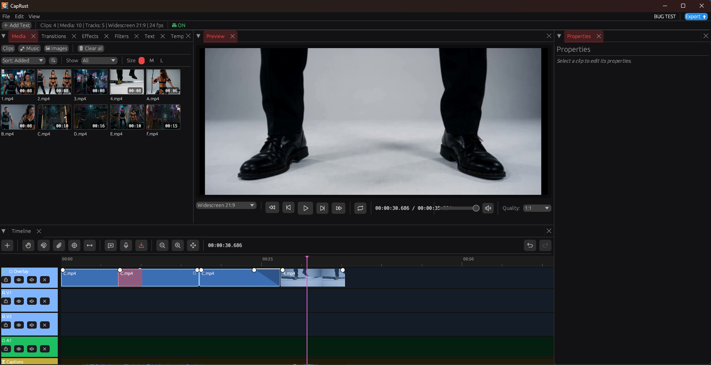

A native Windows video editor for short-form creators. Rust under the hood, AI on your machine, no cloud required.

The editor — media bin, live preview, magnetic timeline, clip properties.
Everything you need for TikTok, Reels and Shorts — nothing you don't.
A single binary built with Rust and egui. Starts in under half a second, uses a fraction of the RAM of an Electron editor.
Whisper generates captions locally. Word-level timings drive a karaoke-style progressive reveal. No audio leaves your machine.
SCRFD face detection follows the speaker and keeps them centred when you switch from landscape to 9:16.
Ripple delete, snap, trim-follow playhead, multi-select drag, transitions with xfade. It just works.
Fade handles on the waveform, volume keyframes, auto-ducking against music, segmented speed ramps with synced audio.
Record a monitor straight into the media bin. Native DXGI Desktop Duplication, cursor overlay, no OBS or virtual device.
Group 2+ clips as camera angles, switch between them from a dock panel, and auto-sync the audio via envelope correlation.
NVENC and AMF on top of the CPU path. Probed at runtime; the export dialog offers only encoders that open on this machine.
Load your favourite CLAP plugins on the master bus. Verified with u-he ZebraHZ 2.9.4.
Drive the editor from Claude Desktop or Cursor through a Model Context Protocol server. 15 tools, undo-stack integrated.
Green screen in one click. Per-clip key colour, similarity, and edge blend. Preview and export share the same filtergraph.
Point CapRust at a Drive, OneDrive or Dropbox folder and it keeps settings in step across machines.
v0.9.6 adds disabled states for chip, switch and segmented control, surfaces save/load/export/undo/redo failures as error toasts, and finishes the button-widget sweep across every panel. Everything from 0.9.5 is included.
↓ Download v0.9.6 for WindowsSHA-256 for each release is on the release page.
All releases · Windows 10 1809+ · 64-bit · MIT license
ffmpeg.exe and
ffprobe.exe as subprocesses. On first run, if neither is
on your PATH, it offers to download a static
BtbN build (~110 MB) into %APPDATA%\CapRust\ffmpeg.
%APPDATA%\CapRust\models. The editor works without
them.
%APPDATA%\CapRust\crashes if anything goes wrong, and
the log is worth attaching to a
GitHub issue.